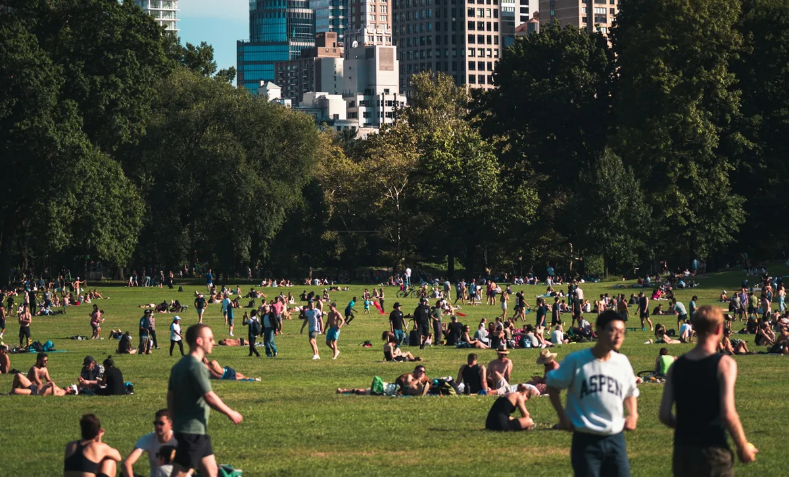

Neighbourhood tools
Is Your Neighbourhood Ready for What's Next?
Five questions, about five minutes. You get an understanding of where your neighbourhood stands today, and what to do about it.
Start the assessment
Built with community associations across Canada


Most people act as though their community is already growing, then wonder why so many initiatives stall.A finding of the Harwood Institute's Community Rhythms research, 1999, drawn from fieldwork in five communities.
Strategies that work for a neighbourhood with momentum tend to fail in one that is still rebuilding trust. Knowing where yours actually sits is what makes the difference between effort that compounds and effort that disappears.
What You Get
-
1
Where your neighbourhood stands
Which of five stages best matches what you described, explained without jargon.
-
2
Why it is there
What shaped the result, and what that usually means for a neighbourhood like yours.
-
3
What to do next
Practical steps suited to where your neighbourhood actually is, not generic advice.
The Five Stages
The assessment asks about five factors: hope and optimism, collaboration, leadership, progress, and resilience. Your answers place your neighbourhood in one of five stages.
- Waiting PlaceSomething is not working, but nobody can quite name it.
- ImpasseThe problem is named and urgent, and action has stalled.
- CatalyticSmall groups are testing what works.
- GrowthProgress is visible and spreading.
- Sustain & RenewThe neighbourhood adapts and keeps going.
This is not a score or a ranking. Neighbourhoods move along this spectrum in both directions, and a stage can be temporary. Reaching Impasse is a step forward from the Waiting Place, because the problem has become clear enough to act on.